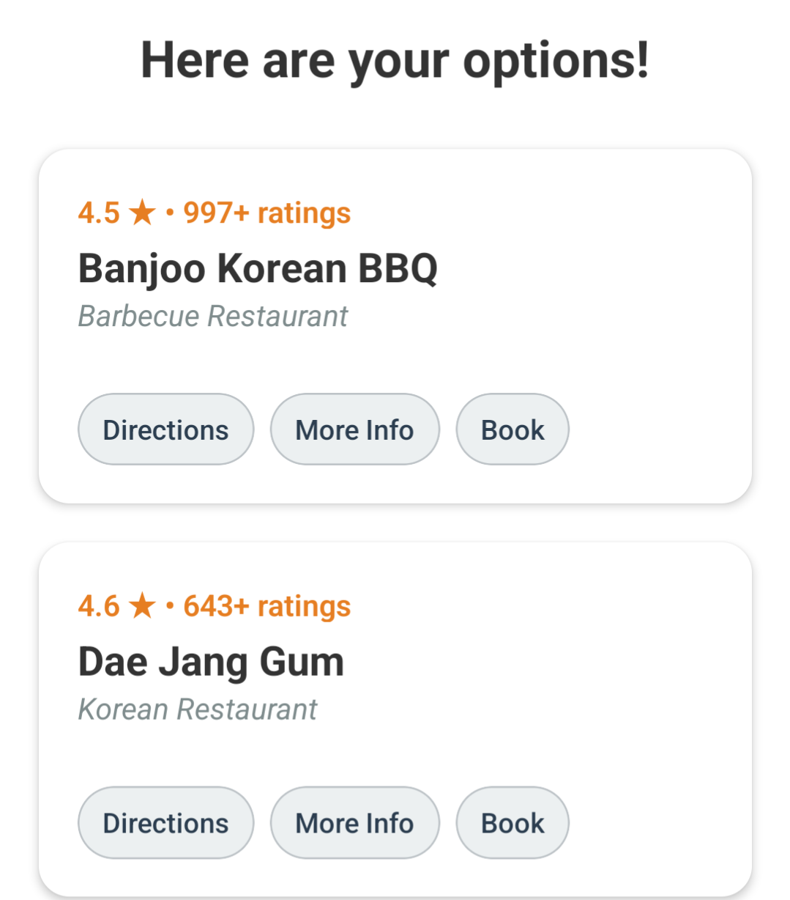

Find Your Dinner
Locates the perfect dinner spot for you with the press of a button
Modern Full-Stack
Built with React.js, Express.js, PostgreSQL, Expo-Go, and AWS
Cost-Efficient Design
Employs caching and serverless design to keep costs near $0



About This Project
At the end of last semester, I kept asking myself the same simple question:
"What should I eat for dinner?" 🤔
Living in NYC, you'd think it would be easy—and even exciting—to try a new restaurant every day.
But despite all the amazing options around me, I ended up choosing Chipotle at least 20 times... just to avoid decision fatigue.
That's when it hit me:
Why not build an app that chooses a dinner place for me?
So I did exactly that. I built an app where you just tap a button, and it picks a restaurant for you—no overthinking, no endless scrolling.
Of course, if you're feeling a bit more selective, you can set filters like cuisine, budget, or distance, and it’ll narrow it down to two perfect picks.
And the best part? It keeps track of everywhere you've been, so you can see your foodie journey come to life on your own personal restaurant heatmap! 🔥